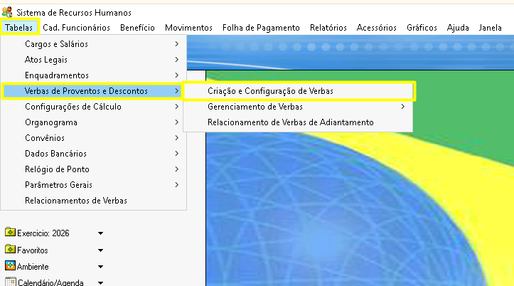
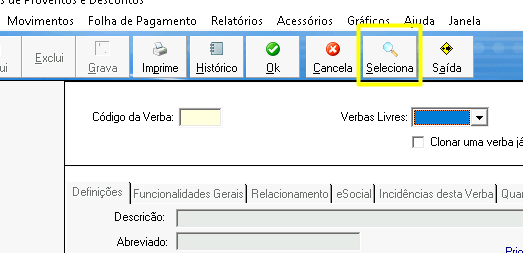
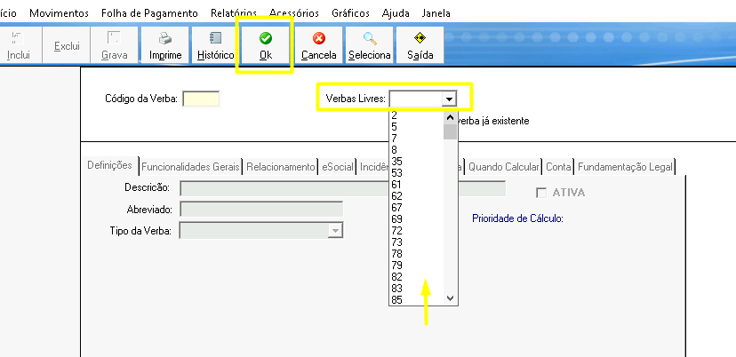
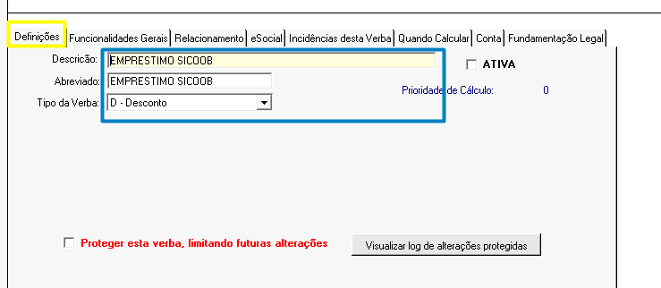
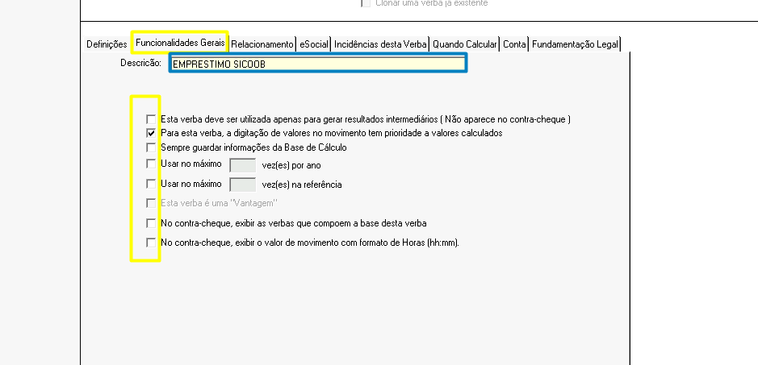
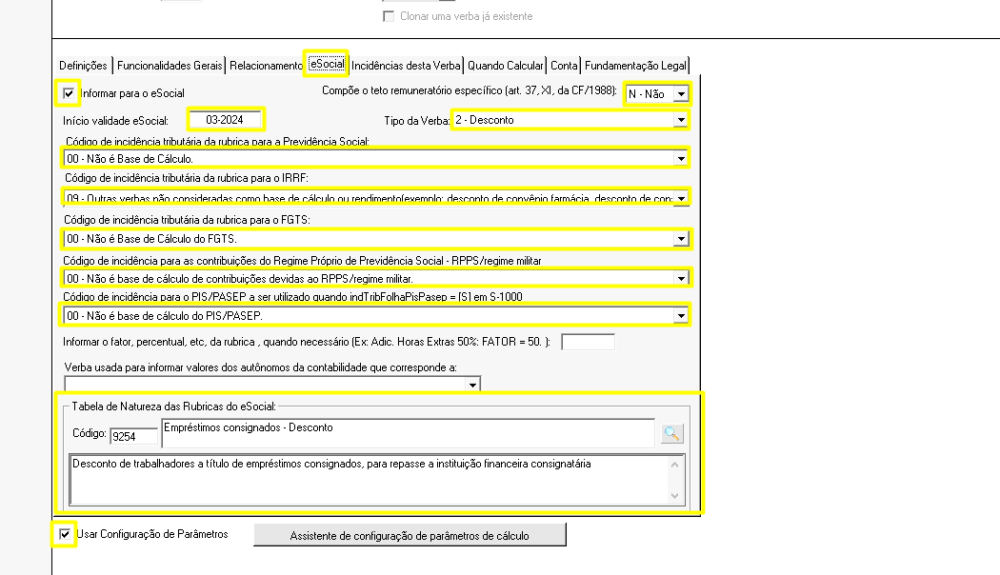
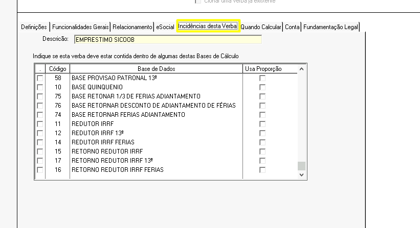
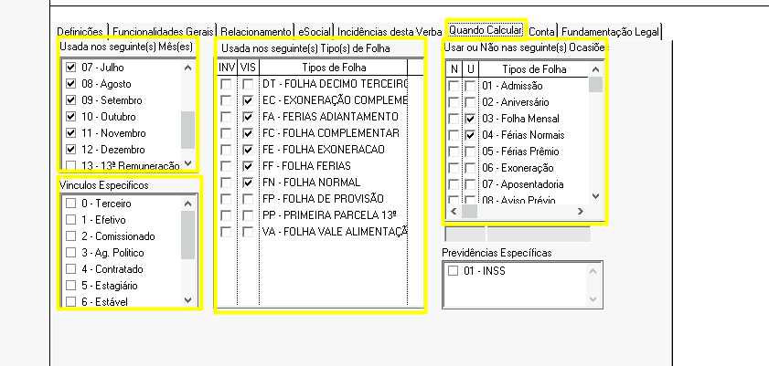
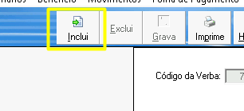

Passo 1
Após realizar login, acesse o sistema de Recursos Humanos Desktop

Passo 2
Siga o caminho: Tabelas > verbas de proventos e descontos > criação e configuração de verbas

Passo 3
Antes de criar uma nova verba, verifique se ela já existe no sistema. Clique no botão "Seleciona"

Passo 4
No campo "verbas livres", selecione um número para crição da verba e clique em "OK"

Passo 5
Na aba "Definições", preencha os campos:

Passo 6
Na aba "Funcionalidades gerais", preencha os campos:

Passo 7
Na aba "E-social", preencha os campos:

Passo 8
Caso essa verba que está sendo cadastrada deva estar contida em alguma base de calculo, preencha a aba "Incidências desta verba"

Passo 9
Na aba "Quando calcular", preencha as informações

Passo 10
Clique em "Inclui" para salvar a verba no sistema
